Story ten. The last one! Who is playing tonight?
История 10 — финал. Выберите уровень ребёнка.
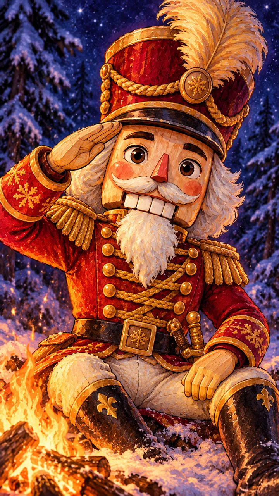
История 10 · The Nutcracker · финал
Listen! The clock is striking twelve…
Включите звук
Щелкунчик: «С Рождеством! Сегодня к твоему костру идёт Мышиный король со всей армией. Мыши утащили последние страницы моей книги. Но с тобой все герои этой зимы. Сразишься со мной?»
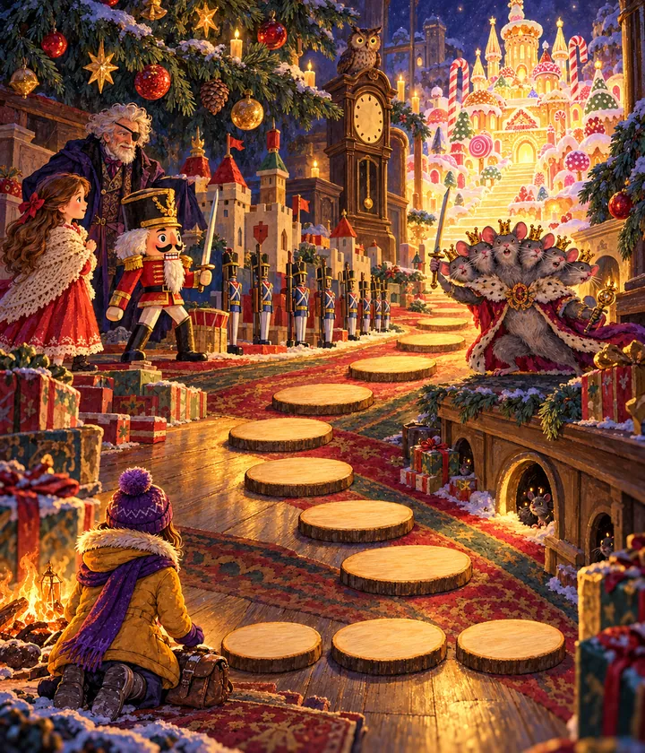

На пути к Мышиному королю — шесть замёрзших страниц. Бросай кубик!
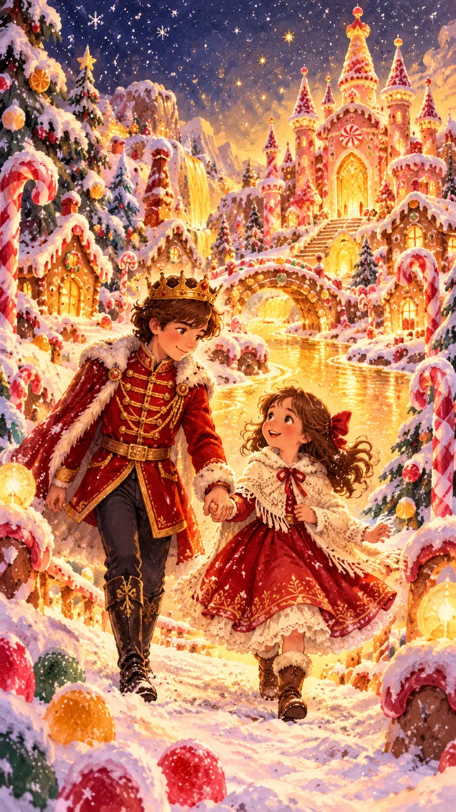
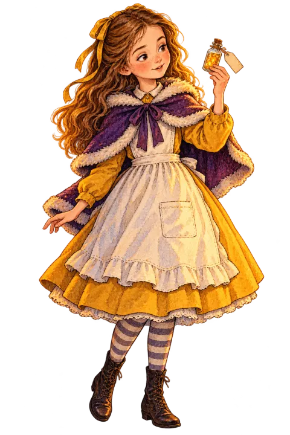
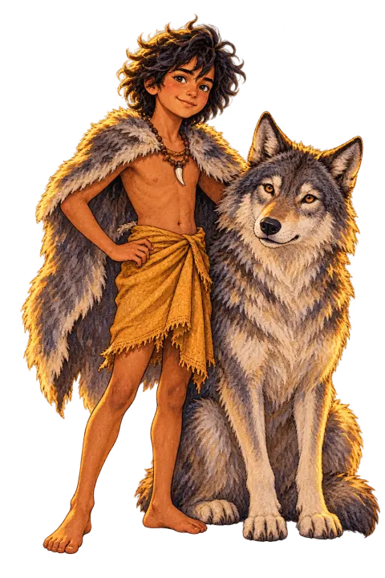
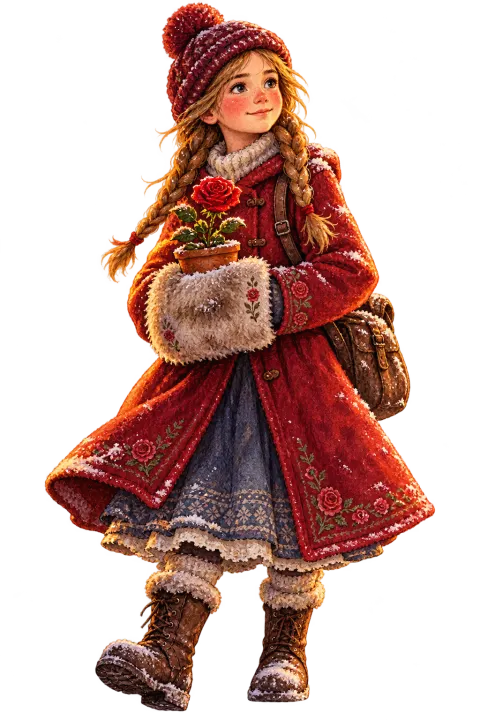
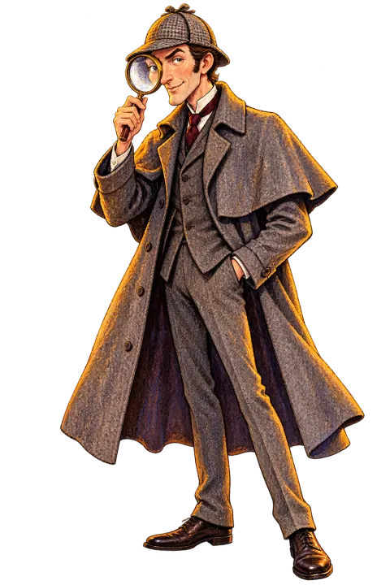
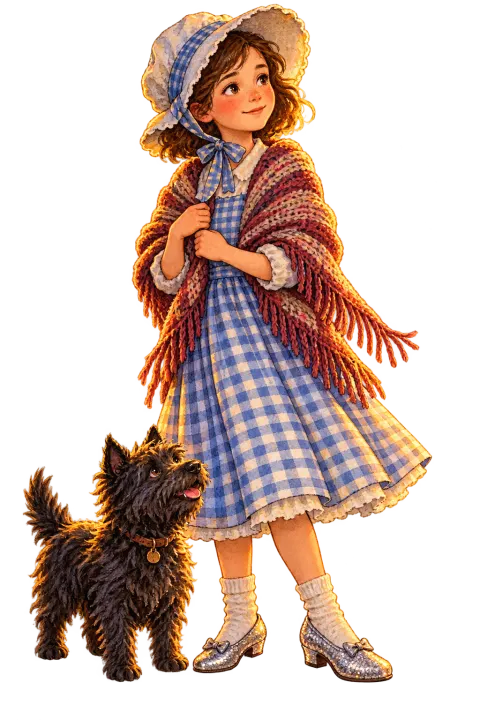
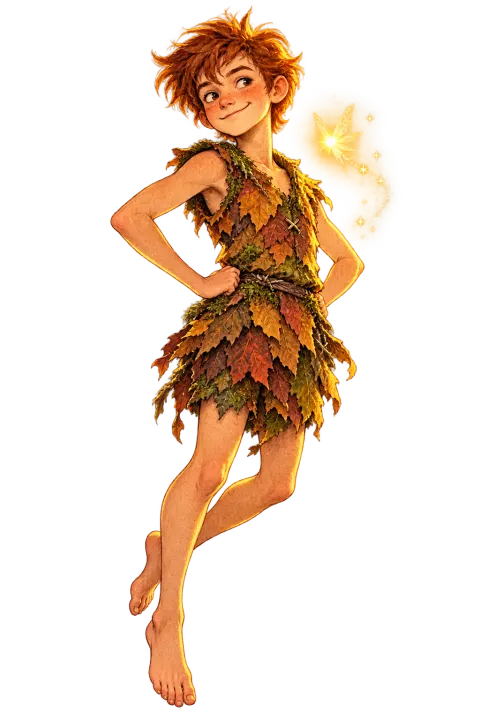
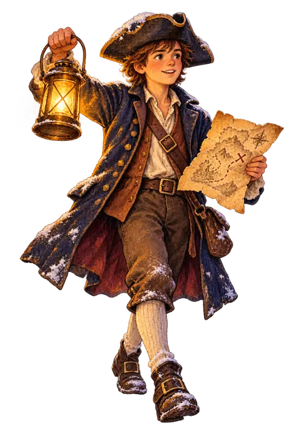
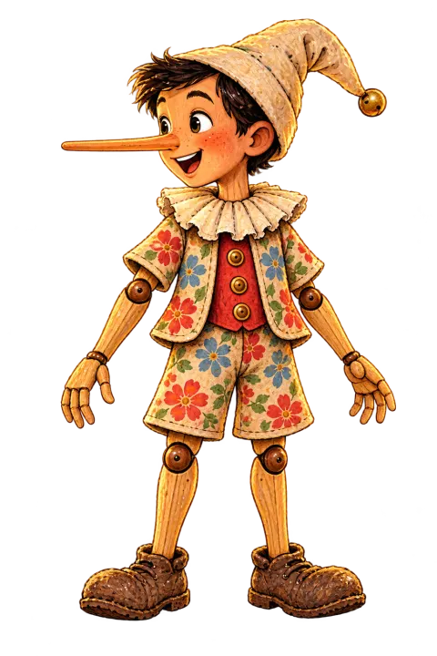
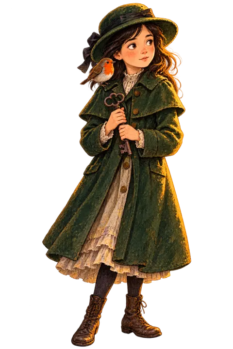
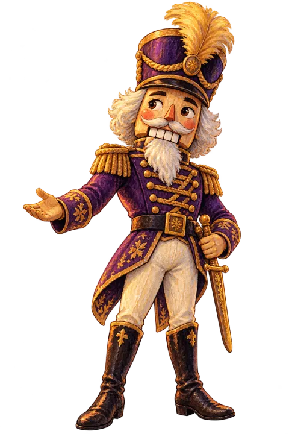
Костёр историй спасён!
Десять историй, десять героев на полке. Мышиный король сбежал, книги оттаяли — Костёр горит ярче, чем в первый вечер.
- Шесть страниц книги Щелкунчика
- План мышей разгадан
- Битва с Мышиным королём
Скоро откроется «Список для чтения» — десять настоящих книг о твоих героях. А приз за весь квест ждёт в школе после каникул: покажи учителю свою полку героев.